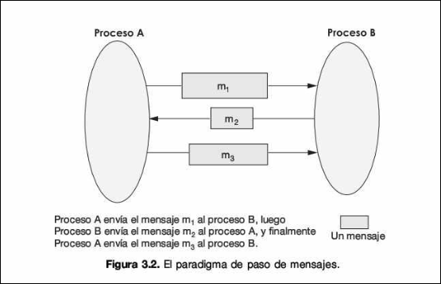
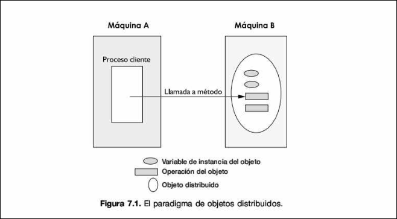
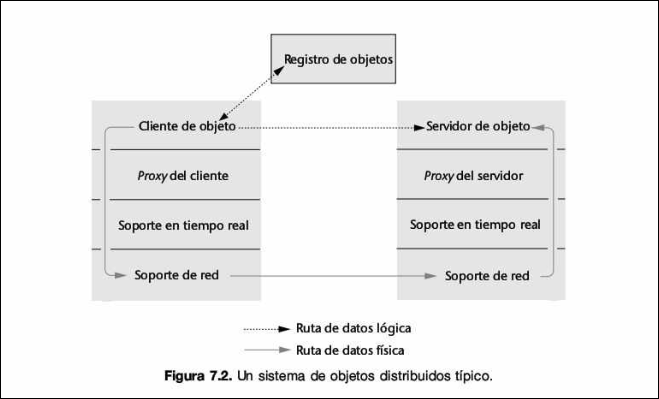
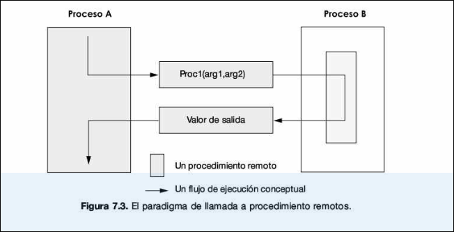
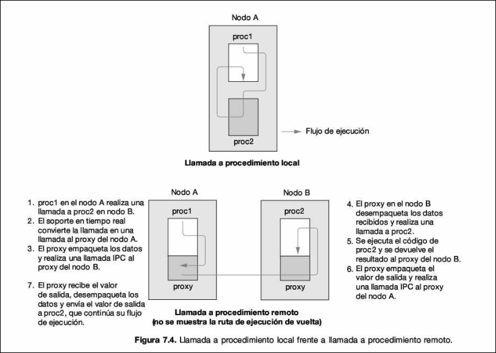
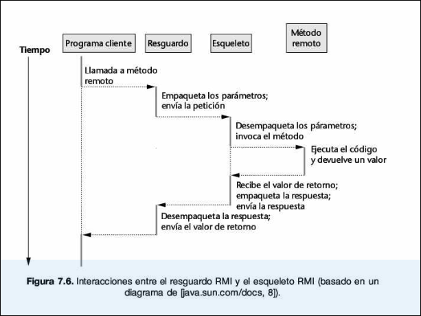

COMDIS · curso 3
3. Objetos Distribuidos · COMDIS
3.1 Evolución del Paradigma: Del Mensaje al Objeto
Para entender dónde estamos, primero debemos contrastar este nuevo modelo con lo que ya conoces (Sockets/Paso de Mensajes).
3.1.1 Paso de Mensajes (Nivel Bajo)
- Enfoque: Orientado a datos.
- Funcionamiento: Simula una conversación humana. Un proceso envía un mensaje formateado y espera que el otro lo interprete.
- Acoplamiento: Alto. Los procesos deben estar activos y sincronizados; si el enlace cae, la colaboración falla.
- Limitación: En aplicaciones complejas con miles de interacciones, interpretar mensajes y mantener protocolos se vuelve una tarea "inabordable".

Info
Orientado a datos es como mandar una carta o formulario. El énfasis está en el contenido del mensaje. Los procesos intercambian paquetes de datos con un formato acordado y el receptor debe abrir el paquete, leer los datos y decidir qué hacer con ellos. Es menos intuitivo porque te obliga a pensar en protocolos de comunicación en lugar de en la lógica del programa.
3.1.2 Objetos Distribuidos (Nivel Alto)
- Enfoque: Orientado a acciones.
- Abstracción: Trata los recursos de la red como objetos encapsulados. Los datos pasan a un segundo plano (son meros parámetros).
- Ventaja: Es más natural para el desarrollo de software moderno (POO), aunque conceptualmente sea menos intuitivo para los humanos que "enviar un mensaje".
Info
Orientado a acciones es como dar una orden directa. El énfasis está en invocar una operación (un verbo, una acción). No piensas en "enviar datos", sino en ejecutar una función específica (método) sobre un objeto, pasando los datos simplemente como argumentos. Aunque ocurre red por debajo, para ti como programador es "pedir que se haga algo".

3.2 Conceptos Fundamentales
Antes de escribir código, debemos definir rigurosamente la terminología arquitectónica.
3.2.1 Tipos de Objetos y Alcance
La distinción fundamental no es física (ordenadores distintos), sino lógica (espacios de memoria distintos).
- Objeto Local: Es un objeto convencional. Sus métodos solo pueden ser invocados por referencias que residen en la misma Máquina Virtual (JVM). La llamada es directa a través de la pila de ejecución (stack).
- Objeto Distribuido (Remoto): Es un objeto que reside en una JVM distinta (ya sea en el mismo ordenador o en otro conectado por red). Para invocarlo, el cliente debe utilizar mecanismos de red, ya que no tiene acceso directo a su memoria.
3.2.2 La Arquitectura de Intermediarios (Proxies)
Dado que el cliente no puede acceder físicamente a la memoria del servidor, necesitamos una arquitectura que cree la ilusión de localidad (transparencia de red).
- Objeto Servidor (Implementación): La instancia real de la clase que ejecuta la lógica del negocio. Reside en la memoria (Heap) del servidor.
- Referencia Remota: Un identificador único que permite localizar al objeto específico dentro de un servidor específico en la red.
- RMI Registry (Registro): Un servicio de nombres (similar a una guía telefónica o DNS) donde el servidor registra (publica) sus objetos remotos asociados a un nombre, y el cliente los busca para obtener su referencia.
**Exportar un objeto** significa indicar a la JVM que ese objeto estará disponible para recibir llamadas externas. Esto implica abrir un puerto TCP y dejar un hilo de ejecución a la escucha de peticiones para ese objeto.
El Mecanismo de Stub y Skeleton
La comunicación sigue el patrón Proxy. El flujo real de una invocación remota es:
- Cliente: Invoca un método sobre el Stub (creyendo que es el objeto real).
- Stub (Proxy del Cliente):
- Realiza el Marshalling (serialización): convierte los argumentos del método en un flujo de bytes compatible con la red.
- Envía la petición a través de la red usando el sistema de transporte.
- Red: Los bytes viajan del cliente al servidor.
- Skeleton (Dispatcher del Servidor):
- Recibe la petición de red.
- Realiza el Unmarshalling (deserialización): reconstruye los argumentos originales a partir de los bytes recibidos.
- Identifica qué método se quiere llamar.
- Invocación Real: El Skeleton llama al método en el Objeto Servidor real.
- Retorno: El Objeto Servidor devuelve el resultado al Skeleton, quien lo empaqueta (Marshalling) y lo envía de vuelta al Stub (que hará el Unmarshalling final para el cliente).
Nota Técnica En versiones modernas de Java (post-1.2), los _Skeletons_ explícitos ya no se generan manualmente. La JVM utiliza **Reflexión (Reflection)** y Proxies dinámicos para manejar este proceso, pero el concepto teórico de "Skeleton" como la pieza que desempaqueta en el lado servidor sigue siendo válido para entender la arquitectura.
Analogía: El Empresario y el Intérprete Imagina que quieres hablar con un empresario japonés (el **Objeto Servidor**) pero tú solo hablas español.
-
El Stub (Tu intérprete): Está contigo. Tú le hablas en español. Él "empaqueta" (traduce) tu mensaje y lo envía por teléfono. Para ti, hablar con el intérprete es como hablar con el empresario.
-
La Red: La línea telefónica.
-
El Skeleton (El secretario del empresario): Está en Japón. Recibe el mensaje, lo "desempaqueta" (traduce al japonés) y se lo dice al empresario. Luego toma la respuesta del empresario, la traduce y te la envía de vuelta.
El Soporte de Ejecución (Runtime) sería la compañía telefónica que garantiza que la señal llegue de un lado a otro

3.3 De RPC a RMI: El salto Tecnológico
3.1 Remote Procedure Call (RPC)
RMI no nació de la nada. Su ancestro es RPC, popularizado en los años 80.
- En RPC, un proceso llama a un procedimiento (función C) en otro proceso
- Utiliza herramientas como
rpcgenpara crear los stubs automáticamente.


3.2 Java RMI (Remote Method Invocation)
RMI es la evolución Orientada a Objetos de RPC, exclusiva para el ecosistema Java
- Permite pasar objetos completos como parámetros o valores de retorno, no solo tipos de datos primitivos.
- Utiliza un Registro RMI (
rmiregistry) para la localización de servicios.
3.4 Implementación en Java RMI
Para construir una aplicación distribuida, Java RMI impone una metodología estricta basada en interfaces.
3.4.1 La interfaz Remota
Es el contrato entre cliente y servidor. Define qué se puede hacer, pero no cómo.
- Debe extender
java.rmi.Remote - Regla de Oro: todos los métodos deben declara que lanzan
java.rmi.RemoteException
¿Por qué RemoteException? Porque en sistemas distribuidos, las cosas fallan. La red puede caerse, el servidor puede no existir, o el stub puede perderse. Java obliga al programador a manejar estos fallos explícitamente.
public interface SomeInterface extends java.rmi.Remote {
public String someMethod1() throws java.rmi.RemoteException;
}
3.4.2 La Implementación del Servidor
Es la clase que hace el trabajo real.
- Debe implementar la interfaz remota definida anteriormente
- Generalmente hereda de
UnicastRemoteObject. Esto facilita que el objeto sea "exportable" a la red. - Debe tener un constructor que lance
RemoteException(porque la clase padre lo hace).
3.4.3 Generación de Stubs y Skeletons
Una vez compiladas las clases, se usa el compilador RMI para generar los proxies:
- Comando:
rmic NOmbreDeLaImplementacion - Resultado: Generado dos archivos:
_Stub.classy_Skel.class- Importante: El archivo
_Stub.classdebe copiarse manualmente a la máquina del cliente (o descargarse dinámicamente) para que este sepa cómo comunicarse.
- Importante: El archivo
Info
A día de hoy se generan de forma automática a no ser que uses una versión inferior a java 5 (que debe ser la puta mierda que usa el profesor, el pavo no actualiza su asignatura desde 2008).

3.5 El Registro y la Puesta en Marcha
3.5.1 El RMI Registry
Es un servicio simple que se ejecuta por defecto en el puerto TCP 1099. Actúa como un mapa de String Objeto.
- Se puede iniciar desde consola:
rmiregistry - O desde código Java:
LocateRegistry.createRegistry(puerto)
3.5.2 Lógica del Servidor (Publicación)
El servidor debe instanciar el objeto y "publicarlo" usando la clase Naming.
- URL RMI:
rmi://host:port/nombre_servicio. - Métodos Clave:
bind(url,objeto): registra el objeto. Falla si ya existe ese nombrerebind(url,objeto): registra o sobreescribe si ya existe (más seguro/común)
3.5.3 Lógica del Cliente (Búsqueda)
El cliente necesita localizar el objeto para obtener una referencia.
- Construye la URL de búsqueda
- Usa
Naming.lookup(url).
Advertencia Crítica:
Naming.lookupdevuelve un objeto tipoRemote. Debes hacer un cast a la Interfaz Remota, NUNCA a la clase de implementación del servidor. El cliente no conoce la implementación, solo la interfaz.
3.6 Ejemplo Completo
Paso 1: La Interfaz Remota
Define el contrato. Debe extender Remote y lanzar RemoteException.
import java.rmi.Remote;
import java.rmi.RemoteException;
// Interfaz compartida por Cliente y Servidor
public interface Calculadora extends Remote {
// Método que queremos invocar remotamente
public int sumar(int a, int b) throws RemoteException;
}
Paso 2: El Servidor (Implementación y Publicación)
Implementa la lógica y se registra en el rmiregistry.
import java.rmi.server.UnicastRemoteObject;
import java.rmi.Naming;
import java.rmi.RemoteException;
import java.rmi.registry.LocateRegistry;
// La implementación real
public class ServidorCalculadora extends UnicastRemoteObject implements Calculadora {
protected ServidorCalculadora() throws RemoteException {
super(); // Necesario para exportar el objeto
}
@Override
public int sumar(int a, int b) throws RemoteException {
System.out.println("Me han pedido sumar: " + a + " + " + b);
return a + b;
}
public static void main(String[] args) {
try {
// 1. Iniciar el registro RMI en el puerto 1099 (para no usar consola)
LocateRegistry.createRegistry(1099);
// 2. Crear el objeto
ServidorCalculadora objetoRemoto = new ServidorCalculadora();
// 3. Registrarlo con un nombre ("Naming.rebind")
Naming.rebind("rmi://localhost:1099/MiCalculadora", objetoRemoto);
System.out.println("Servidor listo y esperando...");
} catch (Exception e) {
e.printStackTrace();
}
}
}
Paso 3: El Cliente
Busca el objeto y lo usa.
import java.rmi.Naming;
public class ClienteCalculadora {
public static void main(String[] args) {
try {
// 1. Buscar el objeto en el registro (Lookup)
// OJO: Hacemos casting a la INTERFAZ, no a la clase del servidor
Calculadora calc = (Calculadora) Naming.lookup("rmi://localhost:1099/MiCalculadora");
// 2. Usar el objeto como si fuera local
int resultado = calc.sumar(5, 10);
System.out.println("El resultado de la suma remota es: " + resultado);
} catch (Exception e) {
e.printStackTrace();
}
}
}
3.7 Algoritmo de Desarrollo Paso a Paso
Para no perderte en la práctica, sigue este "algoritmo" riguroso extraído del profesor (gilipollez histórica, programa con lógica y pista, no vas a hacerte el código sin haber hecho antes la interfaz ):
- Definir Interfaz: Crear
Interfaz.java(extiendeRemote) y compilar. - Implementar: Crear
Impl.java(implementaInterfaz, extiendeUnicastRemoteObject) y compilar. - Generar Proxies: Ejecutar
rmic Impl. Obtendrás el Stub y el Skeleton. - Desarrollar Servidor: Crear
Server.javaque instanciaImply haceNaming.rebind. - Desarrollar Cliente: Crear
Client.javaque haceNaming.lookupy usa la interfaz. - Despliegue de Ficheros:
- Servidor: Necesita
Interfaz.class,Impl.class,Server.class,Skeleton.class. - Cliente: Necesita
Interfaz.class,Client.class,Stub.class.
- Servidor: Necesita
Important
Java RMI es por naturaleza multihilo. Cuando recibe una petición de un cliente, por ejemplo si un cliente
Para que funcione todo el código debe ser Thread Safe.